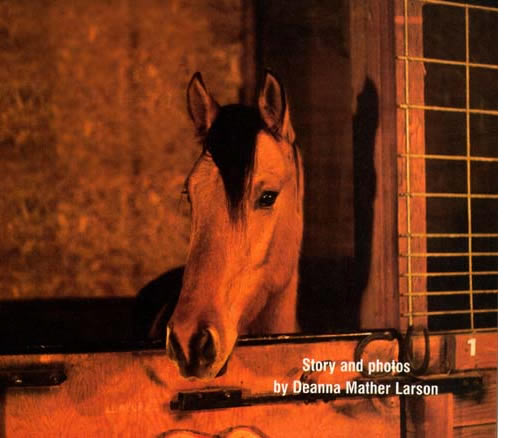
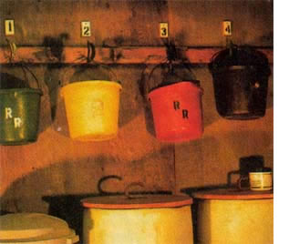
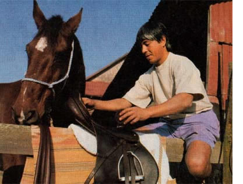
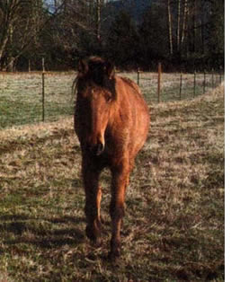
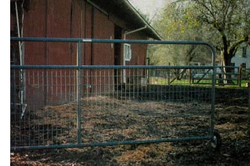

Extra Stalls, Extra Cash
April/May 2002
Story and photos by Deanna Mather Larson
A little surplus space in your barn cangive you some extra cash each month.
As with empty stalls in many barns, ours were filled with junk. With a bit of work and a small cash investment, my husband and I turned these unoccupied spaces into moneymakers. After a few improvements, we advertised "Horse boarding." Two months later both stalls were rented and we had an extra $400 each month. You can do it, too. Here's how.
GETTING STARTED
To decide if horse boarding is for you, check out facilities in your area. Ask what they charge and what they offer. Barns have different levels of boarding, from full service, where feed and care is provided-to basic stall rental-where the client does everything. Visit a few barns. If you see clients, ask them what they like and dislike about their barn. Look at the size and condition of the stalls. How are feed and tack stored? What's used for bedding and how is soiled bedding handled?
While it's important to have some knowledge of horses, you don't need to be an expert. Most veterinarians and horse i trainers are willing to share information.
Determine a price for your stalls by considering the nature of your facility, ongoing expenses and startup cost. We spent $1,000 making our two stalls and pastures ready for boarding. We decided to offer full-service care, so I estimated the additional monthly cost of feed, hay and utilities. Because we didn't have an indoor arena, we charged less than top price. Still, six months later our rental stalls had paid the debt and begun turning a profit.
Plan for backup help to take over chores when you're gone. It's important to let your boarders know when you'll be away and who will care for their horses.
SETTING UP
Empty your stalls, clean and disinfect the area. We rented a power washer and used a diluted bleach solution. Inspect your stalls for loose boards or other problems. Some horses crib (chew on wood), so we strapped a length of rigid electrical conduit to the top edges. Horses may dig, so stall mats are a necessity. Each horse needs a daily supply of fresh water. For safety and convenience, stalls need a light directly overhead.
If you have an arena, clean it up and rework the surface if needed. Clear riding trails. We mowed tracks around our field and along a nearby river bank.
Plan to store boarders' feed in a separate bin. Thirty-gallon plastic garbage cans are ideal. They hold 150 pounds of rolled oats, and the snap-lock lids guard against rodent contamination. Add a saddle rack for each client in your tack room. I built tack lockers mounted on a wall. Each 30-inch square locker has a saddle rack, hooks for gear and room for grooming tools. The doors can be padlocked.
Assess ways to dispose of soiled bedding. Dumping on your property is one choice. Some forest products or garden supply companies haul away horse manure and bedding, which they compost and resell. Remember to figure their fee into your cost analysis.
If you plan to offer pasture, fence off individual areas for each horse. Barbed wire is not acceptable around horses. An electrified top wire will discourage over-the-fence biting. Position gates so there's individual access to each pasture. We use tubular gates with welded-wire panels, which prevent horses from putting a head or foot through the gate.
You need a continuous source of water to outside troughs. We installed float valves and shut-off valves so I can clean the troughs or drain the system in winter if necessary.
PROTECTION
Most states have an Equine Activity Statute. This law recognizes the inherent risks associated with horses and protects horse businesses from unwarranted legal action. Some statutes require the boarder to sign a release. Alaska, California, Maryland, Montana, Nevada, New York and Pennsylvania have no such law. If your state is covered, post a copy of the official notice in your barn. Most horse supply outlets sell these signs. Farm insurance policies offer more coverage than typical homeowners' policies. Consult your agent for clarification of your coverage. Before allowing any new horse on your grounds, require a certificate of veterinary inspection to confirm the health of the horse.
NEW HORSE CHECK-IN
The client is responsible for grooming, worming, vaccinations and hoof trims, but you need to get the names and telephone numbers of the veterinarian and farrier. Ask about the horse's diet. If you're providing pasture and the horse hasn't been on grass, it will need a gradual introduction. Get telephone numbers for the client and at least one emergency contact for when the client is unavailable.
ROUTINE
Designate separate water buckets fen each stall. I clean the buckets weekly and use a bleach rinse monthly. If you use a hose to fill buckets or water troughs, never allow it to contact the container or the water inside: A contaminated hose can pass disease.
Horses thrive on routine. Turn them in and out and feed them at the same times every day. It's also good business to clean the stalls daily. We bed with fir shavings because fir has no oils that ran cause allergic reactions in horses. Our two additional horses added only 20 minutes to my daily chore tune. During the summer we leave the horses in their pastures, only bringing them in for their two feedings. This allows the stalls to dry, discouraging mold and bacteria growth. If there's a heavy rainstorm, I bring the horses in that night.
BOOKKEEPING
Have an attorney approve a contract for your boarders to sign. (See "Contract for Horse Boarding," Page 89.) If your state's Equine Activity Statute requires a signed release, include it with the contract. Start a file for each stall and keep all pertinent information. Consult an accountant for a complete list of tax-deductible expenses. Using separate bins to store boarders' grain helps track the number of sacks you use. Feed from separate hay bales and keep count. We board in two of our five stalls, so I charge two-fifths of the bedding expense to the business.
MARKETING
You don't need to spend much money on marketing. Most feed stores have bulletin boards where you can hang a poster. Check tack and western-apparel shops for similar boards. Put up a sign near your place. The look of your sign and posters reflects the professionalism of your business. Our sign says "Horse Boarding," and gives our telephone number. It sits on a post at the head of the road. When people call, give them a brief explanation of your services and invite them to visit.
SOMETHING SPECIAL
Boarders appreciate our little extras. I'm fussy about cleaning stalls and use a granulated clay product to eliminate odors and moisture. Each stall is plumbed for water. A supply of my homemade, nontoxic fly repellent is always available for clients. They also appreciate the intercom between the house and barn. It's locked in the on position so I can monitor horse activity from the house. Another favorite is the lighting over the stalls, which are on a timer giving the horses an hour of light to dine by. It didn't take long to discover the hidden treasure of our business. We have a little extra income, and the enjoyment of two more beautiful horses and two horse lovers-our kind of people.
Deanna Mather Larson uses tubular pasture gates with welded-wire panels, which prevent the horses from putting heads or feet through the fencing. Barbed wire is not acceptable around horses, but electrifying the top wire will discourage over-the-fence biting.
Resources
For more Information on Enquire Activity Statutes by state try www.horse-insurance.com/law.html . For boarding industry information, log on to www.agric.gov.ab.ca . Click on "livestock," then "horse care," and finally choose " horse boarding."
|
 You can simply feeding by giving each boarder its own feed storage and feeding and watering buckets. |
 Making a special pace to store your client's tack will make it easier for them to access. Professional touches like this will keep current clients happy and attract new ones. |
 Monte, the author's first boarder, takes a tour outside. Keeping the horses healthy and happy is essential to keeping clients. |
|
 Deanna Mather Larson uses tubular pasture gates with welded-wire panels, which prevent the horses from putting heads or feet through the fencing. Barbed wire is not acceptable around horses, but electrifying the top wire will discourage over-the-fence biting. |
 |
 |